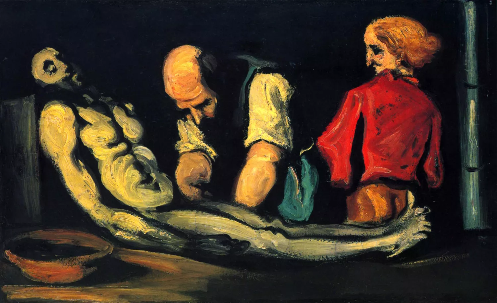

Los años en los cuales se desarrolló fueron 1875 y 1905 aproximadamente. El post impresionismo surge en Francia a finales del siglo XIX y tuvo gran importancia en ese país. También tuvo influencia en otros países como Bélgica y Países Bajos donde artistas como Vincent van Gogh y Piet Mondrian realizaron importantes contribuciones al movimiento.
El post impresionismo o postimpresionismo es un término histórico-artístico que se aplica a los estilos pictóricos a finales del siglo XIX y principios del XX posteriores al impresionismo. Lo acuñó el crítico británico Roger Fry con motivo de una exposición de pinturas de Paul Cézanne, Paul Gauguin y Vincent van Gogh, que se celebró en Londres en 1910. Sus exponentes reaccionaron contra el deseo de reflejar fielmente la naturaleza y presentaron una visión más subjetiva del mundo.
De un modo pragmático lo que caracteriza al postimpresionismo son las pinceladas cortas y precisas, reflejo de los cambios rápidos que se desarrollan en la época.Los colores puros evocan la radicalidad que se vive en la sociedad. La naturaleza ya no se ve de forma subjetiva, si no que se observa como un conjunto. En conclusión, el postimpresionismo consiste en una liberación de las formas clásicas, los colores y texturas se transforman a la par con el cambio social de finales del 1800. Las barreras de la razón se destapan por completo y dan lugar a una cultura inclusión e igualdad que hasta hoy perdura.
¿Cuál es la diferencia entre el postimpresionismo y el impresionismo? Si bien los postimpresionistas basaron su obra en el uso del color experimentado por los impresionistas, se opusieron a reflejar fielmente la naturaleza y presentaron una visión subjetiva del mundo. Así, hicieron gala de una mayor libertad formal y expresiva. El término postimpresionismo fue acuñado por el crítico británico Roger Fry en 1910, tras una exposición de Paul Cézanne, Paul Gauguin y Vincent van Gogh en Londres. Otros pintores destacados fueron Henri de Toulouse-Lautrec y Georges Seurat.


POSTIMPRESIONISMO